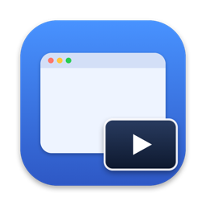

다른 일을 하면서 로그와 빌드 진행 상황을 확인하세요
PiP는 선택한 창을 항상 위에 떠 있는 작은 읽기 전용 패널로 보여줍니다. 다른 앱에서 일하는 동안 터미널의 빌드나 로그를 확인하세요.
무료 · 오픈 소스 · 공개된 preview.6 고정 다운로드이 ZIP은 현재 체크아웃을 직접 빌드한 앱이 아닌 공개된 preview.6 바이너리입니다. Apple Silicon(arm64) · macOS 15.2+ · 읽기 전용: 오디오 캡처·원본으로의 입력 전달 없음. 실험적 ad-hoc 서명 앱으로 Developer ID 서명과 Apple 공증이 없습니다. 열기 전에 ZIP 확인하기.
brew install --cask hanbong5938/tap/pip
진행 중인 작업을 작은 창으로
ScreenCaptureKit과 Metal로 선택한 창을 표시합니다. 원본을 관찰할 뿐 조작하지 않습니다.
창 선택
원본이 계속 그리는 동안 선택한 창을 관찰합니다. preview.6과 현재 소스 빌드에서는 시스템 선택기로 창 선택…으로 시작하세요. 선택 사항인 앱 안의 창 목록에는 더 넓은 화면 기록 권한이 필요합니다.
여러 개의 PiP
⌘N으로 필요한 만큼 패널을 엽니다. 각 PiP는 자기 창과 설정, 크기, 위치를 따로 가집니다.
영역 선택
빌드 상태나 차트처럼 필요한 부분을 골라 읽기 전용으로 볼 수 있습니다.
프레임 레이트 · 불투명도
PiP마다 1 / 5 / 15 / 30 / 60 fps와 불투명도를 따로 설정. 캡처 해상도는 패널 크기를 따릅니다.
클릭 통과
어느 앱에서든 ⌃⌥P로 켜고 끕니다. 켜면 클릭이 패널을 지나 아래 창으로 전달됩니다.
회전 · 크기
패널 이미지를 90°씩 회전하고, 작게 / 보통 / 크게 또는 정확한 사용자 지정 크기로. 비율은 그대로 유지됩니다.
메뉴 막대 전용
Dock 아이콘 없음. 패널 위 호버 컨트롤, 로그인 시 실행과 새 PiP 기본값을 고르는 설정 창.
한국어 · 영어
UI가 시스템 언어를 따릅니다.
개인정보 보호
캡처한 프레임은 기기 안에서 처리되며 저장하거나 네트워크로 보내지 않습니다.
추천 활용 예시
실제 이용 빈도를 뜻하지 않는 읽기 전용 활용 아이디어입니다.
- ⌘빌드 출력다른 앱에서 편집하면서 터미널 빌드 결과 보기.
- ▤로그선택한 앱 창의 최신 줄 살펴보기.
- ▥대시보드원본이 계속 그리는 경우 상태 패널을 옆에 두기.
설치
고정된 preview.6 ZIP에는 위 컨트롤이 포함됩니다. 개인 Homebrew 탭은 현재 체크아웃이 아닌 패키지 바이너리를 설치하므로 설치된 버전을 별도로 확인하세요. 현재 체크아웃이 필요하면 소스에서 빌드하세요.
🍺 Homebrew 배포 바이너리
개인 탭 hanbong5938/homebrew-tap으로 배포되며, 최신 소스를 빌드하지 않습니다.
설치
brew install --cask hanbong5938/tap/pip
업데이트
brew update && brew upgrade --cask pip
삭제
brew uninstall --cask pip
📦 직접 다운로드 · v1.0.0-preview.6
- arm64 ZIP과 같은 버전의 SHA256SUMS.txt를 같은 폴더(예: 다운로드)에 받습니다.
- 터미널에서 두 파일이 있는 폴더로 이동해 ZIP의 체크섬을 비교합니다:
cd ~/Downloads && shasum -a 256 -c SHA256SUMS.txtPiP-v1.0.0-preview.6-macos-arm64.zip: OK가 표시될 때만 진행하세요. 파일이 없거나 명령이 실패하거나 ZIP이FAILED로 표시되면 멈추고 같은 릴리스에서 두 파일을 다시 받으세요. 체크섬은 받은 매니페스트와 비교할 뿐 배포자 신원이나 안전성을 증명하지 않습니다. - 압축을 풀고
Pip.app을/Applications로 옮겨 실행합니다.
시스템 요구 사항
- Apple Silicon(arm64) Mac
- macOS 15.2 이상
- 선택 경로에 필요한 macOS 캡처 동의. 더 넓은 화면 기록 권한은 선택적 창 목록에만 필요
알려진 제한
- 원본 앱이 다른 데스크탑(Space)에서 그리기를 멈추면 PiP 패널도 멈춥니다.
- 오디오는 캡처하지 않으며, 패널에서의 클릭·키 입력은 원본 창으로 전달되지 않습니다.
- 로그인 시 실행은 시스템 설정 › 로그인 항목에서 승인이 필요할 수 있습니다.
개인정보 처리
프레임은 Mac의 메모리 안에서 처리하며 녹화·저장·업로드·공유하지 않습니다. 분석·추적 도구는 없습니다. 설정은 로컬에 저장하고, preview.6 및 현재 소스 빌드에서는 현재 설정 기억을 명시적으로 선택한 경우에만 원본 픽셀이나 캡처 권한이 아닌 설정을 저장합니다. 선택 경로에 따라 macOS가 캡처 동의를 요청할 수 있습니다.